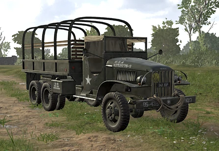
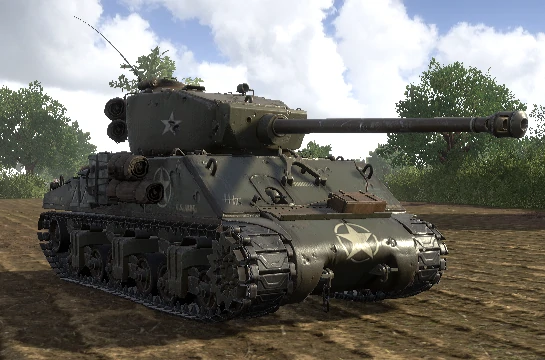

Publicidad 1
VEHÍCULOS
Este es un índice de los vehículos que aparecen en Hell Let Loose.
CAMIONES DE TRANSPORTE
Camión de Transporte Alemán - Blitz

Camión de Transporte estadounidense
Camión de Transporte soviético

CAMIONES DE SUMINISTROS
Camión de Suministros Alemán - Blitz

Camión de Suministros Estadounidense

Camión de Suministros Soviético

TANQUES DE RECONOCIMIENTO
Tanque de reconocimiento alemán (Puma)

Tanque de reconocimiento estadounidense (M8 Greyhound)
Tanque de reconocimiento soviético (BA-10)

TANQUES MEDIANOS
Tanque mediano alemán (Panzer IV)

Tanque mediano estadounidense (M4A1 Sherman)

Tanque mediano soviético (T-34)
TANQUES PESADOS
Tanque pesado alemán (Tiger I)

El Tiger I cuenta con un KwK 36 L/56 de 88 mm como su cañón principal, este arma es bastante capaz de enfrentarse a armaduras pesadas, medianas y ligeras enemigas. Tanto los proyectiles AP como los HE están disponibles para su uso, siendo HE más efectivo contra la infantería con su gran daño por salpicadura.
El Tiger I también cuenta con dos ametralladoras MG34, una montada en el casco y controlada por el Tank Driver, y la otra está fijada a la torreta, que es controlada por el Tank Gunner. Tienen una capacidad de munición de 200 rondas antes de necesitar recargar con un total de 7 cajas de munición, lo que te permite lanzar un aluvión constante de fuego de supresión sobre la infantería enemiga.
Tanque pesado estadounidense - M4A3E2 75mm Sherman

El M4A3E2 Sherman de 75 mm es el tanque pesado de menor calibre utilizado por las fuerzas estadounidenses en Hell Let Loose. Si bien las fuerzas de EE. UU. tienen acceso a más tanques que las fuerzas alemanas, el cañón corto de 75 mm del Sherman tiene problemas para atacar a los tanques Tiger y Panther desde el frente, por lo tanto, estos tanques deben atacarse desde los lados y la parte trasera.
Al igual que la mayoría de los otros tanques en Hell Let Loose, el Sherman debe usarse a medio y largo alcance debido a la rotación lenta de la torreta, así como a la debilidad de su blindaje lateral y trasero.
Tanque pesado estadounidense - M4A3E2 76mm Sherman
El M4A3E2 Sherman es el tanque pesado de gran calibre utilizado por las fuerzas estadounidenses en Hell Let Loose. Si bien las fuerzas estadounidenses tienen acceso a más tanques que las fuerzas alemanas, el cañón largo de 76 mm del Sherman no tiene problemas para penetrar el blindaje frontal de los tanques Tiger y Panther desde el frente. Los Sherman de 76 mm son excelentes tanques de primera línea, siempre que no se enganchen desde los lados y la parte trasera.
Tanque pesado soviético - IS-1

El IS-1 es el tanque pesado de gran calibre utilizado por el Ejército Rojo, el cañón de 85 mm del IS puede penetrar el blindaje frontal del Tiger I. Fue una de las primeras variantes del tanque pesado soviético Stalin, desarrollado a partir del tipo KV probado en combate.
Publicidad 2